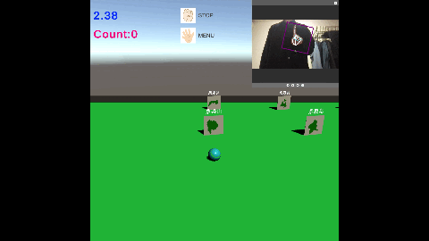

MediaPipeUnityPluginを用いて作成した都道府県学習ゲームです。
URL
ゲームの目的
都道府県をゲームを使い楽しく学習できるように作成しました。また、必然的に画面から離れてプレイすることができる目に優しいゲームにしました。
開発環境
Unity 2020.3.22f1
MediaPipeUnityPlugin 0.8.2
詳細
このゲームを作る上で、特に必然的に画面から離れてプレイすることができるようにするということをこだわりました。
これにこだわった理由は、学習ゲームということで楽しく学べても、その結果目が悪くなるといったことを避けたいと考えたからです。
都道府県学習ゲームということで対象は小学生です。夢中になってゲームを行なってしまうとその親御さんは目などへの負担が気になると思います。
しかし、このゲームは先ほど述べたように述べたように必然的に画面から離れてプレイすることになるため、親御さんにも安心してもらえると思います。
この必然的に画面から離れてプレイすることを実現するためにMediaPipeUnityPluginを用いて、手を認識し、この手の動作によって操作するようにしました。